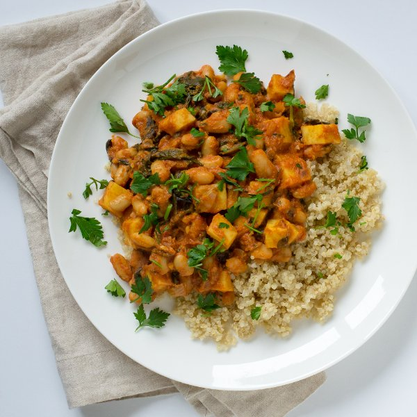

Sweet Potato, Spinach & White Bean Curry with Quinoa

Prep Time
45 min
Nutrition (per serving)
573.7 kcalCalories
26.5 gProtein
94.5 gCarbs
12.4 gFat
Full nutrition table
| Calories | 573.7 kcal |
| Total fat | 12.4 g |
| Saturated fat | 6.8 g |
| Trans fat | 0 g |
| Cholesterol | 1.5 mg |
| Sodium | 423.9 mg |
| Carbohydrates | 94.5 g |
| Fiber | 18.3 g |
| Sugars | 19 g |
| Protein | 26.5 g |
| Potassium | 1724.2 mg |
| Calcium | 265.1 mg |
| Iron | 8.8 mg |
| Vitamin A | 16611 IU |
| Vitamin C | 44.1 mg |
| Vitamin D | 0 IU |
Cookware
Ingredients
- 1 (5 oz) pkgbaby spinach
- 2 (15 oz) canscannellini (white kidney) beans
- 8 fl ozchicken or vegetable broth
- 4 clovesgarlic
- 2 (1 inch) piecesginger root
- 1 small bunchItalian (flat-leaf) parsley
- ½ cupplain Greek yogurt
- 1 cupquinoa
- 1 lbsweet potato
- 2 (8 oz) canstomato sauce
- 1 mediumyellow onion
- curry powder
- salt
- virgin coconut oil
Steps
- In a small saucepan, combine the quinoa, salt, and water; bring to a boil over high heat.1 cup quinoa
½ tsp salt
2 cups water - While the liquid comes to a boil, wash and dry the fresh produce. (Skip the spinach if it came pre-washed.)1 lb sweet potatoes
2 (1 inch) pieces ginger root
1 small bunch Italian (flat-leaf) parsley
1 (5 oz) pkg baby spinach - Once the liquid comes to a boil, stir the mixture, cover the saucepan, and reduce the heat to low. Cook the quinoa for 15 minutes. Once done, remove the quinoa from the heat and let it stand, still covered, for 5 minutes.
- Peel and medium dice the potatoes (cut into ½-inch cubes); transfer to a bowl.
- Preheat a skillet over medium-high heat.
- While the skillet heats up, trim off and discard the ends of the onion and remove the outer layer; small dice the onion (cut into ¼-inch pieces).1 medium yellow onion
- Once the skillet is hot, add coconut oil and swirl to coat the bottom.2 tbsp virgin coconut oil
- Add the onion to the skillet; cook, stirring frequently, until it is softened, 3 to 5 minutes.
- While the onion cooks, trim off and discard the root ends of the garlic; peel and mince or press the garlic.4 cloves garlic
- Peel and grate or mince the ginger.
- Add the garlic, ginger, and curry powder to the onion; stir until fragrant, 15 to 30 seconds.2 tbsp curry powder
- Add the sweet potatoes, tomato sauce, broth, and salt to the skillet; stir to combine and reduce the heat to medium-low. Cook, stirring occasionally, for 10 minutes before adding the remaining ingredients.2 (8 oz) cans tomato sauce
8 fl oz (1 cup) chicken or vegetable broth
1 tsp salt - While the curry cooks, using a knife, shave the parsley leaves off the stems at a downward angle, working away from your body; discard the stems and roughly chop the leaves.
- Drain and rinse the beans.2 (15 oz) cans cannellini (white kidney) beans
- Add the beans, spinach, ¾ of the parsley (save the rest for garnishing), and yogurt to the curry; stir to combine and continue cooking until the potatoes are tender, another 5 to 7 minutes.½ cup plain Greek yogurt
- Uncover the quinoa and fluff with a fork.
- To serve, place the quinoa on a plate or in a bowl, top with the curry, and garnish with the remaining parsley leaves. Enjoy!